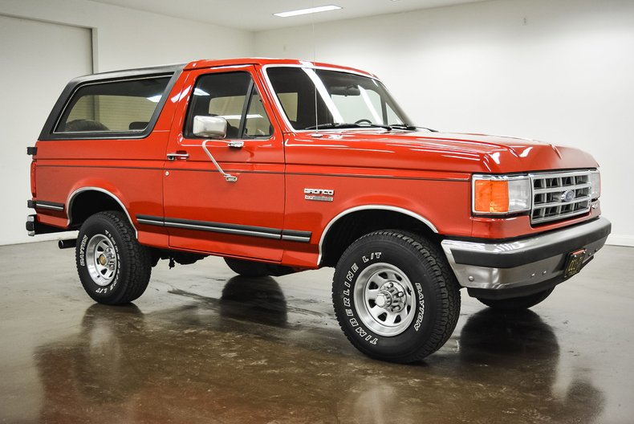

Modelos más representativos
A continuación se muestran algunas camionetas Ford clásicas que marcaron época entre 1970 y 2000:
Ford F-100 (1975)

Una de las camionetas más queridas por su durabilidad y diseño robusto. Popular entre trabajadores y coleccionistas.
Ford Bronco (1990)
Icono de la aventura, reconocida por su estilo todoterreno y potencia.
Ford Ranger (1995)

Modelo de transición al nuevo milenio, combinando tecnología moderna con la esencia clásica de Ford.
Ford Lobo (2000)
Es una pickup robusta con un diseño exterior "atrevido y musculoso".